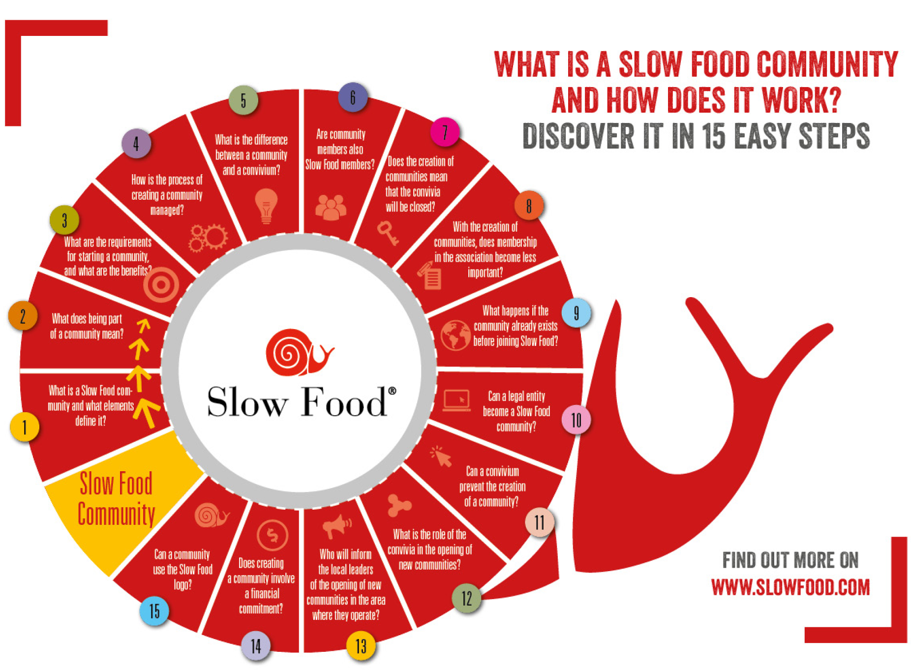

UX/UI Design
service Design
System Design
"Grow" Slow food experience
In the post-pandemic era, this project aims to revive a Slow Food-themed restaurant through innovative design and interactive experiences. It includes an app for virtual planting and offline activies.
Gastronomic Cultural Center
Bra, birthplace of Slow Food, is renowned for its cheese, wine, sausages, and home to Italy's University of Gastronomic Sciences.
Tourist Place
Bra, with its historic Baroque churches, town hall, and medieval streets, is a popular tourist destination near the Alps, offering beautiful natural landscapes.
Art and Cultural Center
Bra, birthplace of the Slow Food movement, is renowned for its Italian culinary culture, cheese, wine, sausages, and the University of Gastronomic Sciences.
Global Organization
Founded in 1989, Slow Food aims to oppose fast food culture and promote a food production and consumption approach that is "good, clean, and fair."

Organizational Philosophy
It promotes local culinary traditions, sustainable sourcing, and fair, healthy food practices.
Global Organization
Slow Food, now in 122 countries with over 83,000 members, collaborates with governments and international organizations to advocate for food safety, agricultural policy, and biodiversity.
Slowfood
Slow Food collaborates with many Italian restaurants, but Osteria del Boccondivino is the only official Slow Food restaurant.
Visitor Traffic
Interviews and on-site recordings revealed that the restaurant's weekday and Saturday visitor traffic exceeds typical levels by more than double, making it one of Italy's top-performing establishments.
Research Summary
The restaurant only accepts phone reservations, with 1 in 5 visitors turned away due to limits. Poor information synchronization results in unlisted random closures on Google Maps, occurring three times in seven surveys.
Innovative Experience
By combining online and offline innovative methods, we aim to enhance the "Slow Food" experience and service at the restaurant. We hope that users can feel the presence of "Slow Food" not only while tasting the cuisine but also through the production of ingredients and the preparation of food.
Expand Slow Food's Influence
We believe that user sharing is one of the most effective ways of spreading our message. Therefore, we hope that users will share their stories after their experience, becoming our advocates. This will enhance the influence of the Slow Food organization on social media, allowing more people to learn about Slow Food.
Boost Bra's Tourism Economy
We hope that through this project, more people will be encouraged to travel to Bra, further boosting the local tourism industry.
1、Online Planting
Online planting allows users to experience the growth process of vegetables and fruits from planting to maturity. Successful online planting can earn a Harvest Card, which can be exchanged for ingredients during a meal.
2、Story Community
Here, users can share planting stories, dining experiences, and their insights on "Slow Food." They can also read stories from others. We will feature interesting stories to attract more users through this method.
3、Restaurant Reservation
Users can book a restaurant reservation online and view the menu for the day. They can also learn about some activities the Slow Food organization is currently conducting.